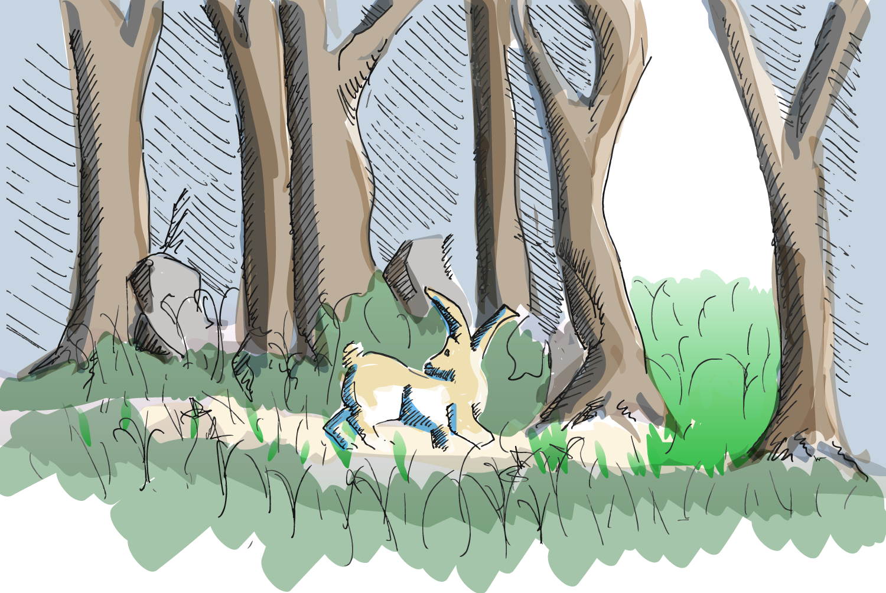
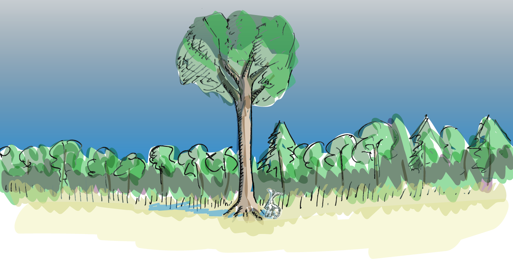

To bring the Attention ↹ Action Journey to your newsroom
This guide will walk journalists through The Green Line‘s original theory-of-change models, its Attention and Action Journey.
Our end goal is to help your news publication increase loyalty and engagement among audience members, as well as motivate your audience to take action on issues that matter to their communities.
Attention Journey: Comedy/Opinion/Behind-the-Scenes
At the top of our Attention Journey is comedy, opinion and behind-the-scenes content. This type of bite-sized content sits at the top of our funnel because they tend to be accessible and shareable — attributes that attract audience members who’d be less inclined to read something more involved or in-depth.
In the case of comedy, we took inspiration from shows like Last Week Tonight and The Daily Show, which take a humorous and accessible but fact-based approach to exploring the news. Op-eds are also attention-grabbing and particularly effective on social media given the focus on opinion-sharing across social platforms like TikTok and Instagram Reels.
Finally, behind-the-scenes — or BTS — content is quick and easy to consume since it’s all about showcasing your team and how the journalism sausage is made. This type of content also helps build trust with your audience since they’re getting to know the people behind the publication.
Explore the steps below ↴
At The Green Line, our social and comedy teams do the heavy-lifting when it comes to producing comedy, opinion and BTS content. On the comedy side, the workflow begins when a member of our comedy team pitches an idea (e.g. TikTok or IG Reel videos, written satire in an IG post format) during our weekly company-wide editorial meetings. In the case of a video, the assigning editor approves the pitch; then the comedy team member creates a draft and submits it to our social team, which edits and publishes the piece.
When it comes to opinion and BTS content, which we’ve exclusively produced in video format for IG Reels and TikTok, the same workflow applies.
In the case of a satirical story, the assigning editor approves the pitch; then the comedy team member creates a draft and submits it to the editor. After the editor finalizes the text and visuals, they submit the post to the social team for publication.
This workflow isn’t meant to be a one-size-fits-all solution; instead, we recommend that you adapt it to suit your newsroom’s needs. Other factors that might impact your workflow include, for example, working in a large newsroom where you need to get buy-in from executives to publish comedy content or working in a small, under-resourced newsroom where you might not have the funds to pay a comedian to produce content.
Our resident comedian Danish Anwar created this TikTok in which he gives his opinion on Canada’s 2022 trucker convoy protest against COVID-19 mandates. The short social video attracted over 4,100 likes and nearly 70,000 views; it was successful because it commented on a major headline-grabbing issue in a way that was comedic in tone and clearly understandable to a broad audience. If The Green Line built an Attention Journey based on this video, we would’ve directed audience members to read, say, a guide than unpacks the trucker convoy protest, which is one level deeper than the TikTok.
@greenlineto üöö‚ú® Reach for the stars, and you can achieve anything ‚ú®üöö #truckers #FreedomConvoy #canada #ONPoli #toronto ♬ original sound - THE GREEN LINE
Depending on your newsroom, you may have to navigate challenges around executing this stage of the Attention Journey. For example, if your news outlet tends to produce hard news that’s serious in tone, consider partnering with a value-aligned comedian or comedic content provider, which will help you separate your journalism from the comedy.
Or, if you need to get buy-in from executives to take a chance on comedic content, share this guide or examples from other outlets that have successfully incorporated comedy as an engagement strategy and cite metrics that demonstrate the impact of this kind of content.
Please share what you’d like us to add to future iterations of this guide, and we’ll try our best to include it!
Attention Journey: Service and profile
The second stage of our Attention Journey is service and profile journalism, which are more in-depth than comedy, opinion or behind-the-scenes content, but remain accessible to a broad audience. Under this category, The Green Line produces guides that help young and other underserved Torontonians survive and thrive in the city, including neighbourhood guides and topical guides (e.g. healthy masculinity, co-housing, etc.), as well as profiles of community business and leaders through our unique series such as “On the Come Up” or “The Checkout.”
We publish these mainly on our Instagram in a carousel post format and also on our website. Our goal is to motivate audience members who’ve consumed related comedy, opinion and behind-the-scenes content to check out a piece of Green Line journalism that goes a bit deeper but isn’t too complex; for people who are disinclined to read hard news, this helps them get a better understanding of a particular issue without feeling overwhelmed.
Explore the steps below ↴
At The Green Line, we have weekly company-wide meetings on Monday, where our entire team provides updates on their work to date, and where the assigning editor assigns new stories or tasks. Typically, there are one or two reporters on the team that focus on producing service journalism, so they either pitch angles for guides or profiles, or receive an assignment from the editor.
The reporter then contacts the relevant source (there’s usually only one person we focus on for service and profile journalism pieces) to set up an interview. They prepare questions, and create an outline that provides a high-level overview of what will be on each of the 10 slides, which are created using Canva. After conducting the video interview either in person or over Zoom, the reporter puts together a first draft on Canva and files it to the assigning editor. After a round or two of edits, the editor sends the post to our social team, which writes up an accompanying caption and publishes it.
This workflow isn’t meant to be a one-size-fits-all solution; instead, we recommend that you adapt it to suit your newsroom’s needs.
One of our former reporters and news innovation fellows produced this profile of fashion designer Josh Drakes for our “On the Come Up” series, which features up-and-coming artists and entertainers in Toronto; it attracted over 120 likes, 91 shares and 16 saves. Another former staffer produced this guide to healthy masculinity that shared insights from Next Gen Men youth program manager Jonathon Reed; it attracted over 90 likes, 16 shares and 16 saves. Both pieces of journalism provide different kinds of value to our audience members; the profile introduces them to a cool new creator in the city, while the guide helps them navigate what it means to be a boy or man in modern times.
If The Green Line built an Attention Journey based on the healthy masculinity guide, we would’ve directed audience members to read an original short-form article that covers student protests against a Jordan Peterson lecture at the University of Toronto, for instance, which is one level deeper than the guide.
Depending on your newsroom, you may want to consider other options beyond guides and profiles for this stage of the Attention Journey. Any piece of journalism that’s generally a lighter lift and lighter in tone is suitable for this second stage. For example, a short 5-minute video doc that unpacks a complex issue in a fun and engaging way would also work well.
Please share what you’d like us to add to future iterations of this guide, and we’ll try our best to include it!
Attention Journey: Original Journalism
The third stage of our Attention Journey is what The Green Line refers to as original journalism, which is more in-depth than both service and profile journalism (second stage), as well as comedy, opinion and behind-the-scenes content (first stage). All of our journalism is original, but we use this label to describe stories that have a uniquely Green Line perspective, which means we either focus on young and other underserved Torontonians, or we fill in a gap in coverage of a widely reported issue.
We publish originals mainly on our Instagram in a carousel post format and also on our website. Originals are well-reported articles with multiple sources and often include video or audio interviews, images, data visualizations and a source list so audience members can fact-check our work; they’re not unlike articles in a reputable daily publication, except they’re tailored to a given social platform (i.e. Instagram). Our goal is to motivate audience members who’ve consumed our service and profile journalism to check out a more in-depth but still accessible and relatively short piece of Green Line journalism that tells a specific story focused on the same topic.
Explore the steps below ↴
As mentioned, at The Green Line, we have weekly company-wide meetings on Monday, where our entire team provides updates on their work to date, and where the assigning editor assigns new stories or tasks. Most of my editorial team focuses on producing original journalism, so they either pitch story ideas or receive an assignment from the editor. Originals fall under two categories: (1) those that fill in gaps in coverage in already widely reported stories, with a particular focus on young and other underserved Torontonians, and (2) those that report on issues that Green Line community members tell us they care about through surveys and other forms of feedback.
The reporter then conducts further research and contacts relevant sources for interviews. They prepare questions, and create an outline that provides a high-level overview of what will be on each of the 10 slides, which are created using Canva. After they’ve gathered everything they need for their story, the reporter puts together a first draft on Canva and files it to the assigning editor. After several rounds of edits, the editor sends the post to our social team, which writes up an accompanying caption and publishes it.
This workflow isn’t meant to be a one-size-fits-all solution; instead, we recommend that you adapt it to suit your newsroom’s needs.
Our reporters and community producers Aloysius Wong and Mahdis Habibinia produced this original story titled “Scarborough RT to shut down this fall, will be replaced with shuttle buses until 2030,” which looks at a longstanding light rail transit line in an underserved part of Toronto that’s closing down without a viable replacement; it attracted over 130 likes, 92 shares and 19 saves.
This story was widely reported in legacy Toronto news outlets, but The Green Line was the first to focus on potential solutions to replace the RT and to interview regular Scarberians, rather than just decision-makers. The same team of reporters also produced “How Oakwood Village residents took community action on homelessness in Reggae Lane;” while the traction for this was less significant with 30 likes, 16 shares and 4 saves, the story idea came from an Oakwood Village resident who attended one of our previous events and completed a community survey.
If The Green Line built an Attention Journey based on the Scarborough RT story, we would’ve directed audience members to read a long-form feature about transit deserts in Toronto’s underserved neighbourhoods, for instance, which is one level deeper than the short-form Instagram article.
Depending on your newsroom, you may want to consider other options beyond short-form Instagram articles for this stage of the Attention Journey. Any piece of journalism that reflects your newsroom’s expertise is suitable for this third stage. So, think about what your newsroom would consider to be an “original. If your outlet specializes in education news, consider covering a widely reported topic through an educational lens. If it specializes in data visualizations, consider creating one that helps provide further context to a widely reported story.
Please share what you’d like us to add to future iterations of this guide, and we’ll try our best to include it!
Attention Journey: Feature part one
The final stage of our Attention Journey is The Green Line’s feature journalism; originally, we exclusively published long-form, solutions-focused features, but have since expanded our definition of feature to include other formats, such as a series of shorter articles and interactive databases. The feature is the most in-depth of all the journalism in our Attention Journey, so audience members who arrive at this stage have been invested in learning about the particular focus topic for some time.
We publish features on our website, and they often include original photography, accompanying data visualizations, pull quotes, multimedia content and more. Our goal is to motivate audience members who’ve consumed originals to check out a very in-depth piece of journalism that provides a systemic look at a particular issue in Toronto. The Green Line’s hypothesis is that audience members who’ve arrived at the final stage of our Attention Journey are most likely to convert to paying members or to make a donation since they’re engaging with our most comprehensive journalism.
Explore the steps below ↴
The workflow process for The Green Line’s feature journalism differs significantly from that of the previous three stages. Typically, our editor-in-chief determines a systemic issue in Toronto that she’s decided is significant enough to cover (i.e. ending of COVID-19 mandates and navigating a new normal) or that community members have indicated through feedback they want coverage on (i.e. food insecurity in Riverside). She then puts out a call for freelance feature reporters who have a relevant pitch for a major feature, and then commissions the best idea.
Publication typically happens six months from that point; at the kickoff planning meeting, our editor-in-chief and the feature reporter determine the overall project timeline, including deliverables and deadlines. See, below, for an example of a typical feature timeline:
- Conduct interviews: June 2023
- Interview update: Friday, June 16, 2023
- Outline review: Friday, June 30, 2023
- Write feature: July to August 2023
- First draft due - Friday, Sept. 1, 2023
- Final draft due - Friday, Oct. 6, 2023
- EIC to finalize feature: Oct. 16, 2023
- Team to fact-check feature: Week of Oct. 23, 2023
- Visual layout first draft due: Monday, Oct. 30, 2023
- Visual layout final draft due: Monday, Nov. 6, 2023
- Publication: Week of November 13, 2023
This workflow isn’t meant to be a one-size-fits-all solution; instead, we recommend that you adapt it to suit your newsroom’s needs.
Our freelance feature reporter Steven Zhou wrote this long-form feature titled "Living With COVID in Toronto: When You Feel Alone Even Though 'We're All in This Together,'" which looked at how the city of Toronto navigated the 1918 Flu pandemic, and compared that to how the city navigated the current COVID-19 pandemic. He reported on historical solutions from 100 years ago that still provided insights relevant today, as well as on how our systems and institutions need to evolve to better support Torontonians’ health and well-being. Zhou’s feature attracted over 4,000 pageviews to date in addition to further engagement on social posts promoting his story, which is significant given that The Green Line was an unknown publication when it was published.
Similarly, our second-ever feature by freelance reporter Aparita Bhandari attracted close to 5,000 pageviews to date, and received considerable engagement since it was amplified on Reddit and by high-profile Torontonians on social media. Titled “More Than Just a Music Channel: How MuchMusic Ushered in Modern Toronto," Bhandari explores the history of MuchMusic and how it created gathering spaces for music-makers and -lovers in the city and beyond. She also looks at how in doing so, MuchMusic shaped the physical geography of the city, as well as the way Torontonians accessed and experienced music.
As mentioned above, don’t limit yourself to just long-form features for this stage of the Attention Journey; lean into the types of formats in which your newsroom specializes, whether that’s a documentary, podcast or anything else. The same goes for topics, so if your newsroom typically focuses on crime, consider commissioning a feature on recidivism rates in your geographic area, for example. Any piece of journalism that unpacks a systemic issue important to your audience is suitable for this final stage.
Please share what you’d like us to add to future iterations of this guide, and we’ll try our best to include it.
Action Journey: Explainer
At the top of our Action Journey are explainers, which break down a systemic problem facing Torontonians. They’re the entry point for readers to understand the fundamentals of a complex issue without providing too much detail, which could overwhelm. We publish explainers, which range from 500 to 700 words, both on our website and on Instagram in a carousel post format. Since they’re accessible and easy to consume, our goal is to motivate audience members who might not be inclined to learn more about the systemic problem to check out our more in-depth coverage on the same issue. But even those who decide not to move down the Action Journey will still be reasonably informed about the systemic problem because the explainer is a standalone piece of journalism.
Explore the steps below ↴
Explainers are part of our overall Action Journey, which means they get assigned as soon as the assigning editor determines that there will be an Action Journey focused on a particular systemic problem.
Because explainers are more research-based, they rarely include interviews with sources. So, the reporter then conducts research focusing in particular on collecting data from original sources (e.g. findings from independent think tanks, publicly available government data, peer-reviewed academic studies, etc.) rather than third-party sources like other news outlets.
The reporter then creates an outline that provides a high-level overview of what will be on each of the 10 slides, which are created using Canva. After the assigning editor approves the outline, the reporter puts together a first draft on Canva and files it. After a round or two of edits, the editor sends the post to our social team, which writes up an accompanying caption and publishes it.
This workflow isn’t meant to be a one-size-fits-all solution; instead, we recommend that you adapt it to suit your newsroom’s needs.
One of our former reporters and news innovation fellows produced this explainer, which unpacks why weed is a labour issue, specifically looking at how Ontario’s cannabis industry grows on the backs of migrant agricultural workers and racialized vendors, including those in Toronto. The explainer — which generated 74 likes, 73 shares and 12 saves — is part of an Action Journey that explores labour rights for growers and sellers in the industry since marijuana was legalized in Canada five years ago.
The same reporter and news innovation fellow produced this explainer, which breaks down the history of Black film in Toronto, specifically looking at the systemic barriers facing Black creatives in the city’s entertainment industry. Attracting 69 likes, 15 shares and 17 saves, the explainer is part of an Action Journey that explores why Black cinema in Canada hasn’t had the same kind of institutional support it’s enjoyed in the U.S.
Depending on your newsroom and its strengths and specializations, you may want to explore different formats for your explainer. For example, instead of a straightforward article with text and photos like The Green Line created, perhaps consider producing explainer videos. Or, is there another form of journalism beyond explanatory that your newsroom can create to help interpret complex news topics for readers? Try it out!
Please share what you’d like us to add to future iterations of this guide, and we’ll try our best to include it.
Action Journey: Feature part two
The second stage of our Action Journey is The Green Line’s feature journalism. As mentioned, above, we exclusively published long-form, solutions-focused features, but have since expanded our definition of feature to include other formats, such as a series of shorter articles and interactive databases. So, why does the feature sit at the second stage of our Action Journey? Readers first learn about the problem in the explainer, and as a result may be motivated to seek out solutions, so they’re then directed to learn about potential local solutions to the problem in the feature.
We publish features on our website, and they often include original photography, accompanying data visualizations, pull quotes, multimedia content and more.
Explore the steps below ↴
As mentioned previously, our editor-in-chief determines a systemic issue in Toronto that she’s decided is significant enough to cover or that community members have indicated through feedback they want coverage on. She then puts out a call for freelance feature reporters who have a relevant pitch for a major feature, and then commissions the best idea.
Publication typically happens six months from that point; at the kickoff planning meeting, our editor-in-chief and the feature reporter determine the overall project timeline, including deliverables and deadlines.
This workflow isn’t meant to be a one-size-fits-all solution; instead, we recommend that you adapt it to suit your newsroom’s needs.
Our freelance feature reporter Megan Kinch wrote this long-form feature titled “Sovereignty, labour and the Push for a Better Marijuana Industry,” which explores how Toronto-based weed workers are navigating their industry's budding labour frameworks as they're being fleshed out in real time. It also looks at how vulnerable communities were excluded from labour opportunities in the weed industry, post-legalization. A collaborative effort between The Green Line, The Hoser and Rabble.ca, Kinch’s feature attracted over 1,100 pageviews alone on our website to date in addition to traffic generated via our partner sites, as well as considerable engagement with newsletters and social posts promoting their story.
Our freelance feature reporter Huda Hassan wrote this long-form feature titled “How Two Black Woman Filmmakers From Toronto Created a Community That Launched the Black-Canadian Film Canon,” which dives deep into the history and legacy of Black cinema in Toronto to unearth a major narrative from the city’s film scene that’s been overlooked. It also explores why Black cinema in Canada hasn't had the same kind of institutional support that it's enjoyed in America. Hassan’s feature attracted over 1,000 pageviews to date, as well as considerable engagement with newsletters and social posts promoting her story.
As we said earlier, don’t limit yourself to long-form features for this stage of the Action Journey; lean into the types of formats in which your newsroom specializes, such as documentary, podcast or anything else. When it comes to topics, consider consulting your audience because community-driven ideas will lead to built-in engagement with your story. Any piece of journalism that highlights solutions to a systemic problem is suitable for this second stage.
Please share what you’d like us to add to future iterations of this guide, and we’ll try our best to include it.
Action Journey: Event
The third stage of our Action Journey is The Green Line’s community event, which can either be in-person or virtual. Our events always include a version of a Story Circle, which brings together diverse residents in intimate settings to discuss important issues, hear one another, and envision the way forward. Pioneered by Capital Public Radio in Sacramento, Calif., Story Circles are facilitated discussions that last three hours.
For The Green Line’s purposes so we can best honour audience needs, we’ve adapted the original format by, for example, creating virtual versions delivered via Zoom or shortening the event to 1.5 hours. The focus of the Story Circle conversations are possible solutions to the systemic problem outlined in the explainer (first stage) and feature (second stage). Our hope is that people who consume The Green Line’s top-of-the-funnel coverage will be motivated to attend our event to discuss the issue with their fellow community members in a fun, safe setting.
Often, the event includes a panel discussion with sources from the feature and industry experts, which set the stage for later discussion among event attendees. In addition, The Green Line makes a point of incorporating joy-centered activities into our community events as a way to motivate people to attend (because our journalism frequently tackles serious systemic issues in the city, this is an effective way to capture people’s attention and engage them).

Explore the steps below ↴
We start preparing for the event about two months in advance to organize logistics and other tasks. Here’s an example of a run of show from our Black Film in Toronto screening and community event, which included short breaks:
- DOORS OPEN (6:30-7:20 / 50 MINS)
- - WELCOME AND INTRODUCTIONS (7:20-7:30 / 10 MINS)
- → Land acknowledgement
- → Housekeeping info (e.g. washrooms)
- → Introduce team and host
- → Anita introduces The Green Line
- → Partner acknowledgement
- → Why we’re here today: Action Journey focus topic
- → Overview of event agenda
- - EXPERT PANEL (7:30- 8 / 30 MINS)
- → Panel discussion
- → Q&A with audience
- - PURPOSE AND PROCESS OF STORY CIRCLE (8-8:05 / 5 MINS)
- → Ground rules for mutual safety and respect
- - STORY CIRCLE SHARING (8:05-8:45 / 40 MINS)
- → Small-group breakout discussions where each person gets to speak about the focus topic for the same amount of time
- - COMMUNITY SURVEY: SOLUTIONS JOURNALING (8:45-9 / 15 MINS)
- → Attendees have 15 minutes of silence to fill in community survey
- - FILM SCREENINGS (9-10 / 60 MINS)
- - CLOSING (10-10:05 / 5 MINS)
- → Next steps
- → How to stay in touch with The Green Line
- → Thank yous
The Green Line hosted our Black Film in Toronto community event and film screenings in February 2023; it featured an expert panel of three Toronto-based filmmakers at different points in their career, followed by a short Story Circle discussion and screenings of three short movies by local Black filmmakers. Nearly 70 people registered and about 50 attended our free 3.5-hour event, which took place in OBJX Studio, a community-driven and youth-oriented arts hub located in Toronto’s inner suburbs.
Our first-ever community event in April 2022, Learning to Breathe Again: How to Live With COVID and Compassion in Toronto, was virtual since our city was then just emerging from lockdown mandates. It featured an expert panel of five experts, including medical professionals, frontline workers and community activists followed by a more in-depth Story Circle, which included both small-group discussions in breakout rooms and a full group conversation. Again, nearly 70 people registered and about 60 attended our free two-hour event, which took place over Zoom.
Alongside our partners Green Majority Radio, CIUT 89.5FM and The Grind, The Green Line also hosted its first-ever ticketed event for our June 2023 Action Journey, called Tune In: For a Better Toronto. A special concert event meant to motivate young Torontonians to vote in the then-upcoming mayoral by-election, it featured four musical acts, a drag king and community group activation booths. The Green Line team also had a table where attendees could fill in our community surveys via paper (analog), QR code (digital) or video for accessibility purposes. Around 250 people paid to attend our six-hour event, which took place at The Great Hall, a historic concert venue in downtown Toronto.
Events are a great opportunity to experiment because anything really goes as long as you include an information-gathering component like a Story Circle where you collect feedback from community members about the issues that matter to them, as well as their solutions to systemic problems. As mentioned above, it’s important to center joy at your events to draw people in; that’s why The Green Line has hosted, for example, a 5x5 basketball tournament, a community marketplace, film screenings and a concert.
You also want to consider whether your event should be free or paid, depending on the audiences you serve. Because one of The Green Line’s target audience segments is underserved Torontonians, which includes lower-income communities, our events are largely free or have sliding-scale fees.
Please share what you’d like us to add to future iterations of this guide, and we’ll try our best to include it.
Action Journey: Event
FILLER EVENT
Explore the steps below ↴

Action Journey: Solutions
The final stage of our Action Journey is The Green Line’s solutions article, which is a curation of community-driven solutions surfaced at our community event (third stage). Our goal at this stage is to motivate people who attended our event to take action on the systemic problem raised in the explainer (first stage) and feature (second stage); we make this easy for them by analyzing and compiling the community survey data, and surfacing the most popular or most compelling solutions suggested by the respondents.
In the solutions article section, we include event photos, as well as a dropdown menu that features three community-driven solutions. Below that, we include three corresponding links to help community members take action on the identified solutions; these links are often suggested by event attendees, though sometimes The Green Line team researches and curates our own links.
Explore the steps below ↴
The process for producing the solutions article starts before The Green Line’s community event (third stage) when using Google Forms, we create audience surveys that ask community members questions related to the systemic problem and accompanying solutions explored in the feature (second stage). Our team then disseminates the surveys, often in three different formats for accessibility purposes (i.e. digital, paper, video), at the event.
Depending on the nature of the event, attendees either get 10 to 15 minutes of time to complete the survey in silence, which usually happens during a more in-depth Story Circle. Or, they complete it throughout the event, which usually happens when there’s no Story Circle or a briefer one.
The assigning editor then asks a member of The Green Line editorial team to collect and analyze the survey data to surface the three most popular or most compelling solutions suggested by event attendees. The team member then researches and compiles resources that enable our community members to take action on those solutions (sometimes survey respondents provide links to resources, so we include those where appropriate). All this information then gets published on our website.
Around 40 per cent of the more than 60 attendees at Breathe Again: How to Live With COVID and Compassion in Toronto completed our community survey, which crowdsourced solutions for how to navigate the coronavirus post-mandate. We compiled their solutions under the heading “Recovering Together: Community Over Apathy.” In addition to demographic questions, these are some of the community-focused questions we asked:
- What kinds of physical and mental challenges did you deal with during the full-blown pandemic phase of COVID-19 over the past two years? How did you cope with them?
- What kinds of physical and mental challenges are you dealing with now that Toronto is approaching the endemic phase of COVID-19? How are you navigating them?
- How did you feel about the lockdowns and various mandates (e.g. social distancing, masking, vaccinations, etc.) in Toronto?
- What do you think would be most helpful for Torontonians in the context of COVID-19?
Ultimately, the top solutions that emerged from the surveys were:
- Know your neighbors
- Safety inspections
- Direct communication
Around 20 per cent of the 250 attendees at Tune In: For a Better Toronto completed our community survey, which crowdsourced solutions for how to improve quality of life in the city. We compiled their solutions under the heading “Building a Better Toronto.” In addition to demographic questions, these are some of the community-focused questions we asked:
- What is Toronto’s greatest strength right now?
- What is the most pressing issue in Toronto right now?
- Do you agree with the “Strong Mayor Powers,” and should the next Mayor of Toronto use them?
- How should Toronto’s mayor work with city councillors and city staff to implement their policies?
Ultimately, the top solutions that emerged from the surveys were:
- Land trusts
- Modular housing
- Community gardens
The Green Line team thinks a lot about how to improve this stage of our Action Journey because we are keen on generating genuine community impact. There’s still a lot of room for improvement, especially when it comes to tracking whether or not our community members act on the solutions, so we recommend iterating on your survey format, focusing in particular on optimizing user experience and creating an engaging-enough survey that people actually want to fill it in (it can be tough since surveys aren’t really seen as fun or interesting). In addition, think through how to format the top solutions to optimize conversion and click-through.
Please share what you’d like us to add to future iterations of this guide, and we’ll try our best to include it.